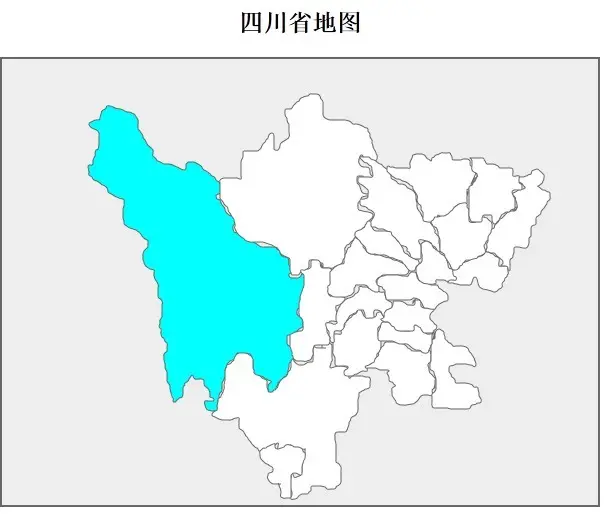

我的家乡——甘孜藏族自治州

甘孜藏族自治州隶属于四川省，简称甘孜州，俗称康巴地区或康区，是中国第二大藏区——康巴的主体和腹心地带。是新中国成立后建立的一个专区级民族自治地区。位于四川省西部，康藏高原东南，总面积15.3万平方千米 ，是一个以藏族为主体民族的地级行政区；全州辖康定1个县级市、17个县。地处中国最高一级阶梯向第二级阶梯云贵高原和四川盆地过渡地带，属横断山系北段川西高山高原区，青藏高原的一部分，是四川盆地西缘山地向青藏高原过渡的地带
甘孜藏族自治州隶属于四川省，简称甘孜州，俗称康巴地区或康区，是中国第二大藏区——康巴的主体和腹心地带。是新中国成立后建立的一个专区级民族自治地区。位于四川省西部，康藏高原东南，总面积15.3万平方千米 ，是一个以藏族为主体民族的地级行政区；全州辖康定1个县级市、17个县。地处中国最高一级阶梯向第二级阶梯云贵高原和四川盆地过渡地带，属横断山系北段川西高山高原区，青藏高原的一部分，是四川盆地西缘山地向青藏高原过渡的地带